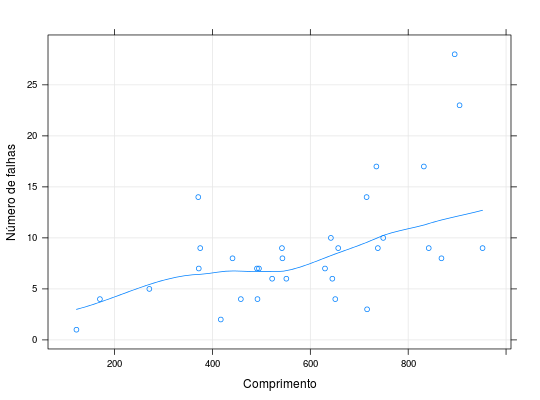
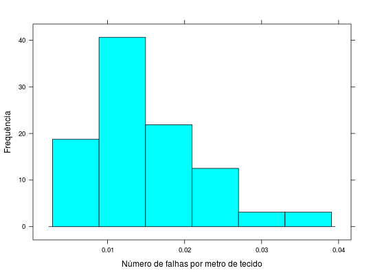

Dados referentes à produção de peças de tecido em uma determinada fábrica. A fábrica registra o comprimento da peça produzida e o número de falhas encontradas.
Um data.frame com 32 observações e 2 variáveis.
compnfalhasPAULA (2004), Exercício 4.6.7, pág. 343.
Hinde, J. (1982). Compound Poisson Regression Models in R (Gilchrist ed.). Springer, New York.
data(PaulaEx4.6.7)#> Warning: data set ‘PaulaEx4.6.7’ not foundstr(PaulaEx4.6.7)#> 'data.frame': 32 obs. of 2 variables: #> $ comp : int 551 651 832 375 715 868 271 630 491 372 ... #> $ nfalhas: int 6 4 17 9 14 8 5 7 7 7 ...library(lattice) xyplot(nfalhas ~ comp, data = PaulaEx4.6.7, type = c("p", "g", "smooth"), xlab = "Comprimento", ylab = "Número de falhas")histogram(~nfalhas/comp, data = PaulaEx4.6.7, xlab = "Número de falhas por metro de tecido", ylab = "Frequência")